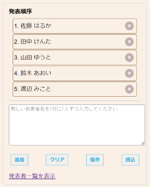
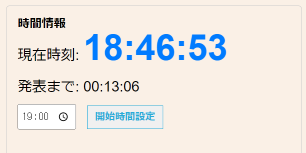
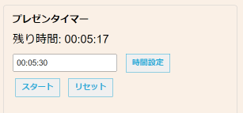

プレゼン管理アプリの使い方
1. 発表順序の管理
発表者の追加、削除、順序の変更、データの保存と読み込みができます。

-
新しい発表者を追加するには、テキストエリアに名前を入力し「追加」ボタンをクリックします。
- 発表者を削除するには、名前の横にある「×」ボタンをクリックします。
- 発表順序を変更するには、名前をドラッグ＆ドロップで移動させます。
- 「保存」ボタン：現在の発表者リストを保存します。
- 「読込」ボタン：以前に保存したリストを読み込みます。
- 「クリア」ボタン：現在のリストをクリアします。
ヒント：
複数の発表者を一度に追加する場合は、1行に1人ずつ入力してから「追加」をクリックしてください。
2. 時間情報の設定
発表開始時刻を設定して、発表までの残り時間を表示できます。

- 時刻入力欄に発表開始時刻を設定します。
- 「開始時間設定」ボタンをクリックします。
- 現在時刻と発表までの残り時間が表示されます。
3. プレゼンタイマーの使用
各発表者の持ち時間を管理できます。

- 時間入力欄に発表時間を入力します（例：00:05:00 で5分）。
- 「時間設定」ボタンをクリックします。
- 「スタート」ボタンでタイマーを開始します。
- 「リセット」ボタンでタイマーをリセットできます。
注意：
30秒前に一度ベルが鳴ります。また、タイマーが0になると音が鳴ります。
事前に音量を確認しておきましょう。
このアプリを使って、スムーズなプレゼンテーション管理を行いましょう！